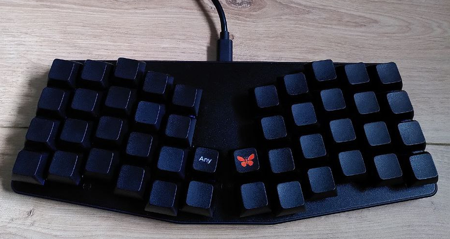

Posted on 2023-05-06 · last modified: 2023-06-17 · 17 min read · hardware
Contents
And now for something completely different—hardware.
Even worse: consumerism!
I bought an Atreus keyboard from Keyboardio about three weeks ago,
and can’t resist writing at least a few sentences about it.
tl;dr: Get it.
For bonus points, build it yourself!
Hitting these involves big stretches of the
thumb—or alternatively the ring finger, in the latter case—and
neither movement is particularly comfortable.
One could then even get rid of the problematic keys altogether,
though they could still be useful for e.g. mouse-assist layers.
Actually getting used to the physical layout of the board took a while.
Typing itself was not the issue,
and I was back to a comfortable pace after just two or three hours of practice.
Incorporating numbers,
special keys,
and getting muscle memory for all of the modifiers and key chords
This is not 100% accurate,
as xkbcat uses X11 input events in order to find out which keys were pressed,
and so my layer key—with which I also press keys like
As I said, I use Colemak Mod-DH as my layout,
though this is probably the least surprising thing about the above layer.
Some key names aren’t at all obvious,
and this layer already showcases quite a bit of the functionality that I’ve packed into the keyboard,
so let’s go through it carefully.
I—perhaps strikingly—opted for not putting Shift on the thumb,
but recreating the “ordinary” one-on-each-side setup from the good old typewriter days.
While I already have a key to access the lower (L1) layer with my left thumb,
I had to sacrifice Shift so I could fit a key to the raise (L2) layer on the right thumb.
This also jumps to the adjust (L3) layer when both lower and raise are held at the same time.
I will gladly trade two layers for one Shift key.
One of the most basic things—besides having layers—that one can do with qmk is mod-taps.
These are keys that act as modifiers when held, and as “ordinary” keys when pressed.
For example, all of the
Guess which programming language I like based on this layer’s macros :).
There are also other mod-taps here, but nothing new concept wise.
A relatively unspectacular layer,
raise is mainly used for numbers,
and number adjacent things.
Some symbols related to this,
like
So far, only the seldom used F-keys are present here.
As should be obvious, this is the least developed layer,
and also the one that’ll probably change the most in the future.
would fire anytime one writes
In general,
I think the solution to stop misspelling a word is not to remap key sequences on the firmware level,
but to—you know—learn how to spell that word.
Still,
I can imagine at least one or two use-cases where something like this could be useful,
so I figured it might be nice to make people aware of this features’ existence.
In addition—as I’ve found out on three separate occasions so far—using the words “auto-correct, but in firmware”
makes people stare in utter disbelief and/or disgust at your keyboard.
That alone makes this feature worth it.
Overview¶
So what even is the Atreus? I will keep this rather short, as I don’t imagine many people not knowing at least a vague answer to that question will have clicked on this random blog and want to read about it. To start, they say a picture is worth a thousand words:
Not pictured: I braided the cable,
which makes it much more manageable.
The default cable is long,
which is not at all necessary since the keyboard is always rather close to my laptop.
Plus, braids
make everything better!

If you’re interested in buzzwords:
this is a 40%, vertically staggered, split-ish mechanical keyboard
with Kailh tactile silent box switches.I think the full name—at least as far as I could make out—is
“Kailh deep sea tactile silent box islet switches”.
Quite the mouthfull indeed!
In particular,
the Keyboardio version builds upon an earlier design by Phil Hagelberg.
There are some distinctions, like two additional thumb keys in the centre,
but most of what I say here will also apply to that version of the keyboard.
The 40% form factor—just 44 keys—is obviously quite something,
and in fact one of the main reasons that I bought this keyboard in the first place.
Basically, it’s small enough so that one can take it everywhere,
while also not being too small.This may seem debatable at this point,
but I guess part of this post is convincing the skeptics that 44 keys really are enough.
Indeed, one might even argue that the form-factor is a big strength of the keyboard,
irrespective of the potential ergonomic benefits.
After all,
even though it involves hitting two keys,
for me it’s much faster to hit a capital
The relying on thumb buttons,
which means that one is not forced to use the weakest finger for holding down modifiers anymore,
also fits nicely with my particular sensibilities.
As does—and these things go hand in hand, I suppose—not having a comically large space bar;
something that too many people still put up with!
The physical keys themselves are pbt with an xda profile.
While they are more than adequate,
sculpted keycaps would have been nice,
if only to go with the ergo theme.
The one key I do have with a label (the E
than having to do an awkward stretch in order to reach 6 or—even worse—F6.
On the Atreus everything is close together,
which means these kinds of big stretches are a thing of the past!Any key) is laser engraved,
and feels quite good as well.
I went with blank keycaps mostly because I use Colemak Mod-DH as my keyboard layout,
and I can’t stand todos on the wrong fingers!
Plus,
not being sure how the key layout was actually going to look like in the end,
this seemed like the safer choice, aesthetically.
Being quite inexperienced with these sorts of things,
I don’t have too many things to say about the switches:
they’re honestly pretty much exactly what I wanted.I will note that the Atreus does have hot-swappable switches, so while I’m satisfied and will probably never fiddle with the swtiches myself, swapping them out should only be a matter of minutes. This is a nice touch, I think.
Comparing them with the two other switches that I have access to,
Cherry MX Browns and Hako Trues,
they are much lighter than the latter—which is a big plus for me—and
a bit more weighty than the former.
Overall, the Kailh switches feel more comfortable than either of the other two.
Plus, the “silent” aspect really delivers:
perfect for the office,
where I now bring this keyboard every day,
as well as coffee shops or trains.
Physical layout¶
The layout—both in terms of physical placement of the keys, as well as the key mappings—obviously plays a tremendous role in making a keyboard that small both comfortable, and actually usable. While perhaps not quite being on the level of a truly split keyboard, like the ergodox, the ergonomic aspects are entirely adequate, and there obviously had to have been some sort of trade-off in favour of portability. That being said, some keys are hard to hit. For me, this is thankfully limited to the two upper thumb keys, as well as the penultimate keys from the left and right in the bottom row: .----.----.----.----.----. .----.----.----.----.----.
| | | | | | | | | | | |
.----.----.----.----.----. .----.----.----.----.----.
| | | | | | | | | | | |
.----.----.----.----.----.----.----.----.----.----.----.----.
| | | | | | XX | XX | | | | | |
.----.----.----.----.----.----.----.----.----.----.----.----.
| | XX | | | | | | | | | XX | |
.----.----.----.----.----.----.----.----.----.----.----.----.
The outer two keys would suffer from the same issue, but these are actually very easy to hit with one’s palm. I press the two keys under the middle finger with a thumb or middle finger curl, both of which feel fine for me.
Also, while the thumb buttons are convenient,
I do sort of wish for one or two additional pinky keys on both sides,
perhaps on the second or third row:
.----.----.----.----.----. .----.----.----.----.----.
| | | | | | | | | | | |
.----.----.----.----.----.----. .----.----.----.----.----.----.
| XX | | | | | | | | | | | | XX |
.----.----.----.----.----.----.----.----.----.----.----.----.----.----.
| XX | | | | | | | | | | | | | XX |
.----.----.----.----.----.----.----.----.----.----.----.----.----.----.
| | | | | | | | | | | | |
.----.----.----.----.----.----.----.----.----.----.----.----.
Thanks, Emacs.
however… took some time.
The better part of these last weeks, in fact,
and even now I still occasionally notice some hesitation and awkwardness in my movements.
I suppose it did not help that I kept fiddling with the layout;
perhaps people who have less specific requirements and just use the Atreus as-is would need less time.
Then again, creating a custom keyboard layout for this thing is at least half of the fun!
Speaking of which, let’s talk about that.
Keyboard layout¶
I did not try the default layout in any way, instead diving straight into designign my own, so I can’t say much about that aspect.
The Atreus comes loaded with the Kaleidoscope firmware,
and Keyboardio are very keen to point to their GUI configurator Chrysalis for interfacing with the keyboard.
Personally, I was planning on using features—like tap dancing—that Chrysalis does not support,
and I didn’t see much of a point in using Kaleidoscope just to be different,
so I immediately flashed my Atreus with qmk.This was very straightforward—after I figured out that one needs to hold the Escape key when plugging in the keyboard while flashing.
After, that, one simply has to execute
to get some sane key repeat and compose key settings, and that’s it!
The end result turned out to be quite nice,
and for my typical workflow I now indeed often have the feeling of being faster than I was before.
Typing $ xset r rate 230 70
$ setxkbmap -option compose:menu
M-( has become such a joy!
While one could stop here and just paste the layout,
I think the considerations that went into it during its initial
creation—and while fiddling with it, of course—are quite important,
given the unusual form-factor.
Plus, there aren’t very many detailed resources on actually using a 40% keyboard that I could find,
so perhaps this will also turn out to be useful to people not using an Atreus.
For the impatient: you can find my finished layout here.
Key chord considerations¶
As I extensively use both Emacs and xmonad, there are quite a few modifier combinations to consider. Obviously, some of these will be more difficult to press than others, especially since I don’t want to go overboard with layers, and I would like as many of my key chords to commute as possible, but more on that later. For example, a (non-exhaustive) list of combinationsKeeping in line with X11 conventions,
would be M4 denotes the Super key, and M1 is for Alt.C-S, C-M1, M4-M1, S-M4, and C-M4;
this already suggests some vague ordering of keys to different hands.
Before buying the Atreus, I keylogged myself for a little bit on my internal laptop keyboard using xkbcat.
A cursory analysis reveals the following:
At first I was very surprised to see
x so far up this list—at least,
until I remembered that M1-x and C-x exist!$ sort ~/.keylog.txt | uniq -c | sort -r | head -n15
80590 Control_L
58476 n
49657 space
47140 e
46213 Down
38062 s
36874 Shift_L
32862 t
31168 Up
30814 BackSpace
30522 p
28555 a
26445 x
25004 Alt_L
24831 Super_L
Down—does not show up at all.
I did, however, go through the trouble of remapping every right variant of a key (like Shift_R) to their respective left versions,
so that there was no need for further seding.
Based on the prevalence of Up and Down,
it’s probably fair to say that the layer key and Control are my two most pressed keys.
The data suggests that Control and the layer 1 key should probably be on different hands.
Shift was used quite a lot,
but since the Atreus does not have a number row
it will become a bit less essential,
with a lot of special characters moving to a different layer instead.
Super and Alt are probably not too critical,
and can be distributed according to how easy it is to press the most important key chords.
For example,
C-M1 is used very often inside of Emacs,
and hence Alt should be on the opposite hand of Control.
One thing that I didn’t anticipate,
yet which turned out to be quite important,
was to have “numerical” symbols on a layer that’s on the opposite hand of the space bar.
Otherwise, entering maths can become a bit clunky.
For example, with both keys on the same hand,
just typing 3 + 3 would involve
holding down a layer key with one thumb,
pressing 3,
releasing the layer key,
tapping Space with the same thumb,
pressing the layer key, …
Quite the chore!
Much better to have Space and the layer key on opposite hands,
and set up a fall-through for it on the respective layer
(i.e., so that one can just hold down the layer key and write 3 + 3 “in one go”).
This situation gets exacerbated when writing LaTeX
(which I do quite a lot).
So much for my preparation.
Of course, I still changed the layout every two minutes during the first few days of usage,
and I’m only now slowing down a little bit.
Still, I like to think that keylogging myself gave me some small insight into my (subconscious) keyboard habits,
although using a 40% board is so different from even just a laptop keyboard that
surprises like the above maths entry conundrum are inevitable.
Anyways, let’s actually talk about the layers now.
Base layer¶
.-----.-----.-----.-----.-----. .-----.-----.-----.-----.------.
| Q | W | F | P | B | | J | L | U | Y | M4+; |
.-----.-----.-----.-----.-----. .-----.-----.-----.-----.------.
| A | R | S | T | G | | M | N | E | I | O |
.-----.-----.-----.-----.-----.-----.-----.-----.-----.-----.-----.------.
| S+Z | X | C | D | V | ARP | REP | K | H | , | . | S+/ |
.-----.-----.-----.-----.-----.-----.-----.-----.-----.-----.-----.------.
| ESC | TAB | M4 | L1 | SPC | A[] | BSC | C() | L2 | - | ' | RET |
.-----.-----.-----.-----.-----.-----.-----.-----.-----.-----.-----.------.
S+«key» keys emit Shift when held and «key» when pressed.
There is a slight delay between pressing the key and the press registering,
since we have to wait for a possible tap,
which keeps me from using modifiers on the home-row, as some people like to do.
Likewise, the M4+; key acts as Super when held and as ; when pressed.
At this point, it is actually my main way to press the Super key,
even though I don’t find the real M4 key particularly hard to hit with my thumb.
Sometimes these things just happen,
I suppose,
though it may help that I press both outer keys of the top row (that is, q and ;) with my ring finger
instead of my pinky.
The A[] and C() keys are utilising tap dances,
in order to do even more.
Tap dances are very similar to mod-taps,
only in addition to just differentiating between a “pressed” and a “held” state,
qmk now also keeps track of how often a key has been tapped.
So far, my setup here is quite basic;
I only check whether a key was pressed once, twice, or is being held.
This allows me to not need extra keys for parentheses,
as they can fit on the modifier keys:
-
A[]: Alt when held,[when pressed once, and]when pressed twice. This one is especially neat, since tap dances play well with other modifiers, so pressingS-M1once will result in{and pressing it twice gives}. -
C(): Control when held,(when pressed once, and)when pressed twice.
electric-pair-mode,
or a different package of choice usually takes care of inserting it.
Having essentially all parentheses on the base layer makes programming even more fun,
especially the more parentheses-heavy languages—whether that’d be Clojure or Rust.
The REP and AREP keys make use of the Repeat Key functionality;
basically, REP executes the key chord that was last pressed.
On the other hand,
AREP is an alternative, configurable, of “repeating” things;
by default, it turns some directional movements
around—e.g., M-f becomes M-b—but
it can be made to pretty much input anything one wants.
Layer 1¶
.-----.-----.-----.-----.-----. .-----.-----.-----.-----.-------.
| & | *> | >>= | <&> | | | = | + | * | - | M4+RT |
.-----.-----.-----.-----.-----. .-----.-----.-----.-----.-------.
| :: | => | =<< | <|> | @ | | LFT | UP | DWN | RGT | \ |
.-----.-----.-----.-----.-----.-----.-----.-----.-----.-----.-----.-------.
| S+! | <* | <*> | <$> | <- | | MEN | -> | $ | # | % | S+^ |
.-----.-----.-----.-----.-----.-----.-----.-----.-----.-----.-----.-------.
| | | | | | | | | L3 | ALT | | S-Ins |
.-----.-----.-----.-----.-----.-----.-----.-----.-----.-----.-----.-------.
Note that
Crucially, however, keys that were “Shift when held,
something when pressed” on the base layer retain the Shift part of that functionality.
This is used for the commutativityS+^ and S+! are tap-dances for technical reasons:
qmk can’t emit shifted keycodes with an ordinary LSFT_T setup.I.e., it does not matter whether I press
of the modifier keys,
which would otherwise drive me insane.
The same goes for all fall-through keys;
i.e., keys that appear blank in the above layout.
These aren’t blocked or anything,
just no new functionality is added
so the key falls back to what’s on the next lowest layer.
In plain terms,
the key to the left of S-L1-«key» or L1-S-«key».L3 will still be Control,
as I can comfortably press that while holding down something with my left hand.
The same can’t be said for the Alt key,
which is on the left hand by default,
so a separate binding for it has to be created on the right hand.
Thus,
as the two don’t commute,
key chords involving the lower layer and Alt are to be avoided if possible.
The S-Ins key is not some sort of tap,
but actually just emits a Shift-Insert,
which can be used to paste stuff from the X11 primary selection.
Layer 2¶
.-----.-----.-----.-----.-----. .-----.-----.-----.-----.-----.
| | 7 | 8 | 9 | | | | + | * | - | |
.-----.-----.-----.-----.-----. .-----.-----.-----.-----.-----.
| : | 4 | 5 | 6 | = | | | ` | _ | ' | " |
.-----.-----.-----.-----.-----.-----.-----.-----.-----.-----.-----.-----.
| S+0 | 1 | 2 | 3 | | | | | | # | % | S+^ |
.-----.-----.-----.-----.-----.-----.-----.-----.-----.-----.-----.-----.
| | | | L3 | | | | | | | | |
.-----.-----.-----.-----.-----.-----.-----.-----.-----.-----.-----.-----.
=, +, *, and -,
are replicated from the lower layer.
This is due to the above mentioned issues of inserting arithmetic.
This layer also features ` and ' quite prominently,
as these are important for CDLaTeX.
Plus, putting ' and " on this layer circumvents the difficult to hit key on the base layer.Although, strictly speaking, only
' would be necessary, as S-L2 is pretty easy to hit.Layer 3¶
.-----.-----.-----.-----.-----. .-----.-----.-----.-----.-----.
| | | | | | | | F7 | F8 | F9 | F10 |
.-----.-----.-----.-----.-----. .-----.-----.-----.-----.-----.
| | | | | | | | F4 | F5 | F6 | F11 |
.-----.-----.-----.-----.-----.-----.-----.-----.-----.-----.-----.-----.
| | | | | | | | | F1 | F2 | F3 | F12 |
.-----.-----.-----.-----.-----.-----.-----.-----.-----.-----.-----.-----.
| | | | | | | | | | | | |
.-----.-----.-----.-----.-----.-----.-----.-----.-----.-----.-----.-----.
I will try to keep this post updated with newer versions.
Currently, I’m thinking of putting some xmonad specific bindings on here,
which could even to free up the Super key to be used inside of Emacs
for certain things—that would certainly be a worthwhile experiment.
Other thoughts include things like volume and brightness controls,
although this is less critical since my laptop keyboard is never far away.
Other features¶
There are some features that aren’t necessarily reflected in the keys themselves, yet are quite essential for day-to-day use. The tl;dr can be found in rules.mk. One notable omission from the following list will be Unicode entry. This is solely due to the fact that qmk’s built-in support for this utilises some gtk-specific functionality, which is woefully inadequate for my setup. However, since I mostly write English nowadays, so far I have survived on a mixture of compose key sequences, and jinx telling me that I really should write an Umlaut in a certain place. This is one of the areas in which kmonad actually beats qmk—and by quite a large margin at that! There is a good way to define Unicode characters by setting up one’s own X11 keymap, but I haven’t gotten around to this yet. Some day!Key overrides¶
Quoting from the documentationKey overrides allow you to override modifier-key combinations to send a different modifier-key combination or perform completely custom actions.Above I mentioned that some keys on the keyboard are quite hard to hit. On the default layout, one of these turns out to be the Tab key, which is nonetheless important in a lot of situations. Conveniently, Emacs interprets
C-i as Tab, so there is less need to actually hit the “real” key.
However, not all programs are quite so understanding—or old, I guess.
With key overrides, one can send a real TAB whenever C-i is pressed;
no special convention on how to interpret certain key chords required!
I also rebound C-m to RET (with the same justification), and S-BSP to DEL.
This is one of those features that I didn’t know I needed,
yet now couldn’t live without anymore.
I’m definitely looking forward to discovering new and interesting ways of using this!
Autocorrect¶
This is a quaint little feature: auto-correct inside of your keyboard’s firmware! I promise that it’s not as bad as it sounds. It does not work automatically, thankfully, but is based off a given list of replacements. For example,widht -> width
widht, which then gets replaced by width.
This is based on (a trie of) the most recently pressed keys,
so whenever one actually wants to write widht
all that’s needed is pressing, for example, any modifier during the insertion.
As I’ve really just been trying this out for a laugh, my current word list is quite short:
:alot -> a lot
accesories -> accessories
accomodate -> accommodate
alledge -> allege
Caps Word¶
Caps Word is a clever alternative to Caps Lock, which I enable by pressing both Shift keys together. After that, all of the letter keys are shifted, and- becomes _
until a different key (excluding common sense ones like backspace) is pressed.
This is very useful for, e.g.,
writing long constants,
as these tend to have capital names separated with underscores:
writing BOTH_SHIFTS_TURNS_ON_CAPS_WORD has never been easier!
One thing to note is that,
while layer switching works just fine in “Caps Word mode”,
the Tri Layer feature does not seem to play nicely with it;
i.e., the mode gets disabled when switching to these layers.
This is also the reason why I have an explicit lower, raise, and adjust setup,
instead of just using Tri Layer.
One could fiddle with the caps_word_press_user callback,
but it seemed much easier to just create one additional layer toggle instead.
I haven’t looked at how hard it would be to hack this into Caps Word,
so maybe this is a future pull request.